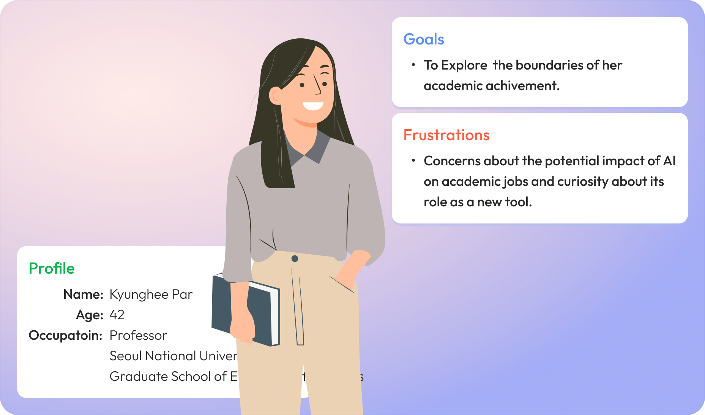
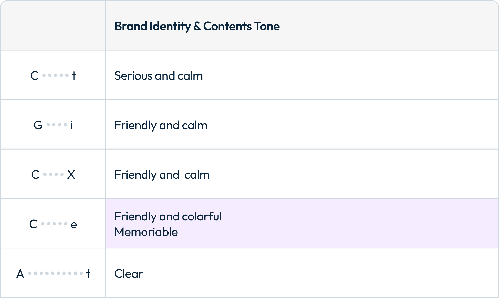
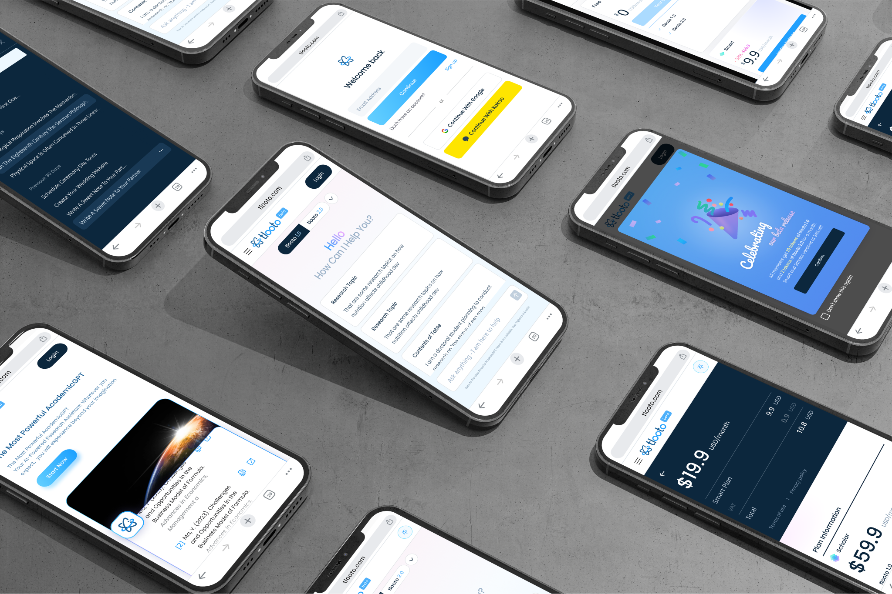
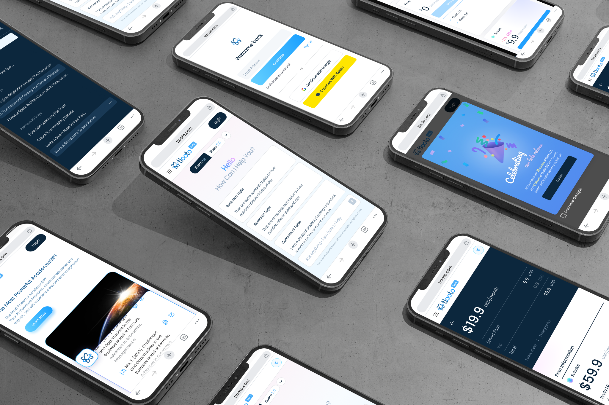

Design Strategy
The design strategy for the AI-Research Assistant began with UX research.
Tlooto established a design strategy for being a
friendly, colorful, and memorable AI Research Assistant.
This strategy was applied to UI design, branding, and promotions.
Overally, we tried to give "humanized" and "trustworthy" AI research assistant.
-
UX Research
Persona
Tlooto identified that targeting the persona type of "professors at prestigious universities" is the most challenging but also the most competitive market. Through persona research, we aimed to transform their primary concern of "AI" emergence into a sense of expectation and curiosity about AI.
-
UX Research
Competitive Audit
Competitive analysis revealed that the strategy of "Company C," which has a similar business size, was most suitable for Tlooto. Therefore, we strived to maintain a consistent design that is friendly, colorful, and memorable.

Color System
To create a vibrant impression, we used high-saturation pink and blue as the accent colors and actively used gradients to convey a friendly impression. To balance the "memorable and vibrant" interface with the readability of the "reports," we used calming blue-gray tones throughout, harmonizing the overall interface with blue variations.

Font System
For giving friendly impression, we chose "Poppins" as the main font, which has wide horizontal proportions and many open curves. To ensure "report readability" and "multilingual support," we used "Noto Sans" as the secondary font. We focused on refining design in font size, weight, letter spacing, and line spacing to harmoniously use these two distinct fonts.
Components Library
Final Screen Design


 

Advertisement Design
To shift the sense of concern about the emergence of "AI" to a sense of expectation and curiosity, we chose "We fuel your journey" as the main message. We aimed to design an image of a friendly and vibrant "learning tool." Additionally, we used colors and fonts that provide a connection to the design tone used in the UI to build consistent branding.